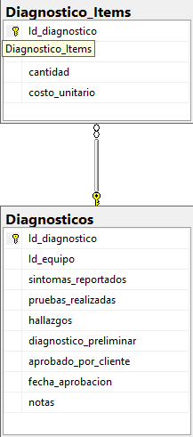

Diagrama de la tabla en la base de datos
Registrar diagnósticos y generar cotizaciones, mediante un sistema que integre síntomas, pruebas y refacciones requeridas, para proporcionar presupuestos claros y medibles al cliente en el punto de atención.
La tabla Diagnosticos está normalizada porque cumple con:
CREATE TABLE Diagnosticos (
Id_diagnostico VARCHAR(20) PRIMARY KEY, -- Formato: DG-YYYY-####
Id_equipo VARCHAR(50) NOT NULL, -- FK hacia Equipo
sintomas_reportados TEXT NOT NULL,
pruebas_realizadas TEXT,
hallazgos TEXT,
diagnostico_preliminar TEXT,
aprobado_por_cliente BIT DEFAULT 0,
fecha_aprobacion DATETIME NULL,
notas TEXT,
CONSTRAINT FK_Diagnosticos_Equipo FOREIGN KEY (Id_equipo) REFERENCES Equipo(Id_equipo)
);
CREATE TABLE Diagnostico_Items (
Id_diagnostico VARCHAR(20) NOT NULL,
item VARCHAR(100) NOT NULL,
cantidad INT NOT NULL DEFAULT 1,
costo_unitario DECIMAL(10,2) NOT NULL,
CONSTRAINT PK_Diagnostico_Items PRIMARY KEY (Id_diagnostico, item),
CONSTRAINT FK_Diagnostico_Items_Diagnosticos FOREIGN KEY (Id_diagnostico) REFERENCES Diagnosticos(Id_diagnostico)
);
INSERT INTO Diagnosticos (
Id_diagnostico, Id_equipo, sintomas_reportados, pruebas_realizadas,
hallazgos, diagnostico_preliminar, aprobado_por_cliente, fecha_aprobacion, notas
)
VALUES
('DG-2025-0001', 'EQP-0001', 'No enciende', 'Verificación de fuente y batería',
'Fuente dañada', 'Se requiere cambio de fuente', 0, NULL, 'Cliente contactado'),
('DG-2025-0002', 'EQP-0002', 'Pantalla parpadea', 'Prueba de pantalla y conexión interna',
'Cables flojos', 'Reemplazo de flex de pantalla', 1, '2025-09-16', 'Aprobado por el cliente'),
('DG-2025-0003', 'EQP-0003', 'Sobrecalentamiento', 'Prueba de ventilador y pasta térmica',
'Ventilador obstruido', 'Limpieza interna y cambio de pasta térmica', 0, NULL, 'Pendiente aprobación'),
('DG-2025-0004', 'EQP-0004', 'Teclado no funciona', 'Prueba de conexión y software',
'Teclado dañado', 'Reemplazo de teclado', 1, '2025-09-17', 'Cliente aprobó cotización');